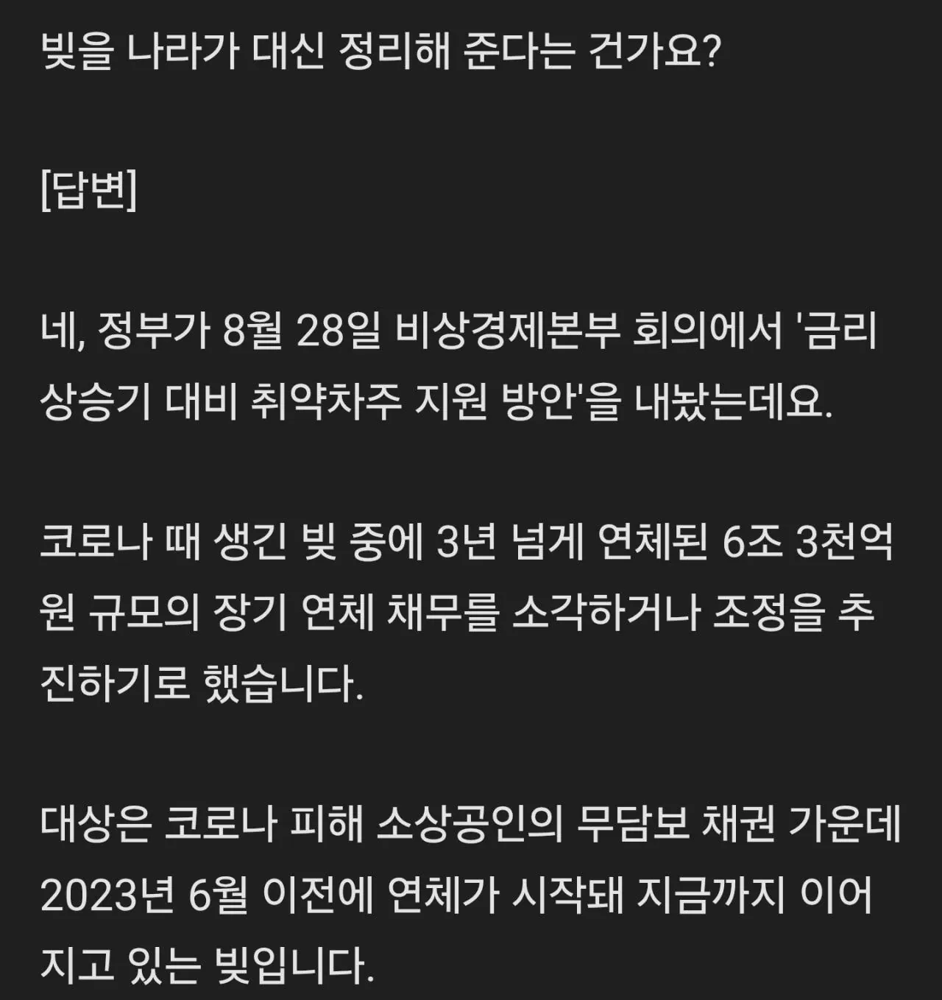

?

?
어차피 사회 불안정만 늘릴 벼랑 끝 인간들인데 남이 도움 받는 걸 꼴보기 싫어하는 인간들이 이 나라에 이렇세나 많다
버릴건 좀 버려라
외국에서 코로나 지원때도 대출이 아니라 걍 돈주는거였을텐데
아 이건 좀, 열심히 사는 사람들 다 병신 만들면 누가 열심히하냐 ㅋㅋㅋ
아 씨 나도 대출존나 땡길걸
도덕적해이 장려하네
그때 마스크로 돈번 공장은 그럼 돈 뺏을겨? 코로내 수혜본 사람들 돈 다 뺏어서줌?
아 씨발 왜 또 지랄이야 씨이바알
이럴 때 사용하려 파산이나 회생이있는 것 아닌가
ㅋㅋㅋㅋㅋ
성실하게 갚은 사람 탕감이 아니라 3년 내내 연체하고 있던 개뻔뻔한 배째라 놈들만 없애준다고?? 그것도 성실하게 갚고있는 사람들이 내는 세금으로??? 나라 진짜 시발이네 ㅋㅋㅋㅋㅋㅋ
내 빚도 좀 갚아줘 ㅠ